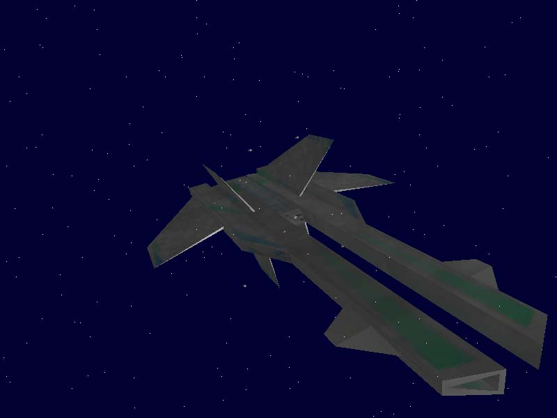
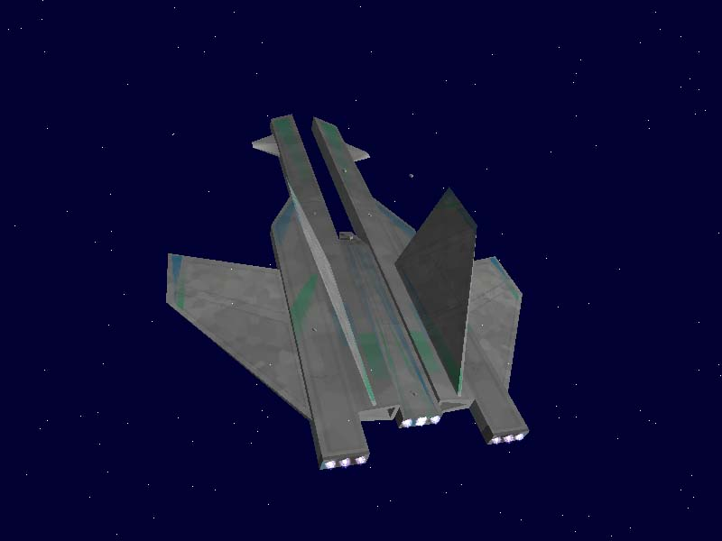

Yrilan
Name : Yrilan
Type : CapShip
Model : n/a
Speed : 410 kps
Afterburner : 893 kps
Yaw/Pitch/Roll : 14/14/14 dps
Shield : Fore 4,000u Sides 3,200u Aft 3,400u
Armor : Front 4,000u Side 3,600u Rear 3,200u
Hull : 5000u
Cargo : N/A
Radar : N/A
Jump Drive: no
Cloaking : no
Guns : 6 Mount (6 Heavy)
Default : 2 Vaporizer, 2 LR_Beam, 2 Fussion
Missile : 5 Mount (2 Light Cap Ship Missile, 3 Medium Missile)
Default Loadout : 20 Mace, 42 Torpedo
Turrets : 8 Turrets, 4 beam Turrets, 6 Hvy Turrets, 1 main.
Info :
To Come.
|


|